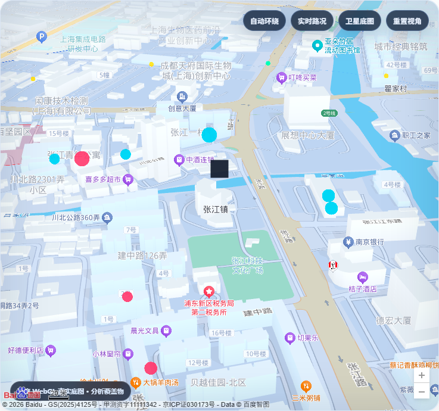

真实路网等时圈
调用百度步行路径规划，通过扇形采样与空间插值重建 15 分钟可达边界。
经纬智析团队 · 电子科技大学
圈析智图基于百度地图开放能力，将真实路网、民生设施与空间诊断融合为可验证、可追溯、可导出的社区规划建议。
CORE CAPABILITIES
系统明确区分真实 API 与离线模拟结果，并把每一步分析依据保留在报告和结构化数据中。
调用百度步行路径规划，通过扇形采样与空间插值重建 15 分钟可达边界。
面向医疗、教育、商业与养老等民生类别，分析覆盖缺口和空间分布。
将设施缺口与道路可达性联合分析，输出带优先级的补点候选区域。
一键生成 Markdown、HTML、CSV、JSON、GeoJSON 及完整 ZIP 交付包。
REAL MAP EVIDENCE
真实模式展示分析等时圈、设施点位、盲区与规划建议在城市空间中的关系。
